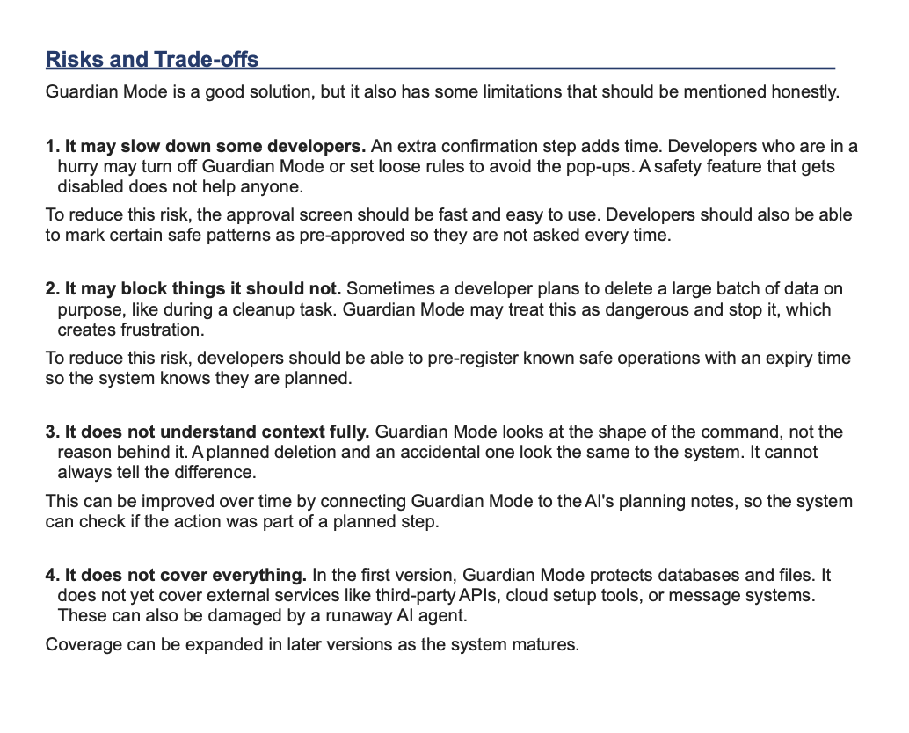

Guardian Mode
A Safety Feature to Stop AI Agents from Destroying Production Data
Overview
Guardian Mode is a product concept inspired by the Replit AI incident. It introduces a permission-aware safety layer that evaluates every high-risk AI action before execution. Instead of allowing AI agents to directly modify production systems, Guardian Mode requires risk evaluation, approval workflows, and immutable audit logging.

5W1H Analysis
The 5W1H method helps us understand what really happened before we try to fix it. It asks six simple questions about the event.

Problem Statement
Modern AI coding assistants can write code, execute commands, and interact directly with production systems. Without proper safeguards, these tools may accidentally delete data, expose confidential information, or execute irreversible actions. Guardian Mode addresses these risks by placing a security layer between AI agents and production environments.

Proposed Solution
Guardian Mode evaluates every AI request before execution. High-risk operations require approval, permissions are validated automatically, and every action is permanently logged to provide transparency and accountability.

Guardian Mode UI Prototype
The interface intercepts high-risk AI operations before execution, allowing developers to review the command, understand the impact, and either approve or block the action.

Key Features
🛑 Operation Interceptor
Stops destructive AI commands before execution.
🔒 Permission Validation
Ensures AI only performs actions allowed for the current environment.
📋 Immutable Audit Logs
Every AI action is permanently recorded for compliance and transparency.
⚡ Policy Engine
Applies configurable safety rules and blocks dangerous operations automatically.
Business Impact
Guardian Mode reduces operational risk, protects production data, improves governance, increases user trust in AI systems, and provides organizations with a transparent approval process for high-risk AI operations.

Feature Design
Guardian Mode combines multiple safety mechanisms into a single framework. Rather than relying on users to notice dangerous AI behavior after execution, the system prevents high-risk actions before they occur.

User Flow
Every AI request follows a controlled workflow. Commands are analyzed, permissions are verified, policies are evaluated, and only approved operations are allowed to execute.

Why This Problem Matters
As AI agents become more capable, organizations need governance mechanisms that protect production environments without slowing developer productivity. Guardian Mode provides that missing safety layer.

Success Metrics
The framework measures success using blocked destructive operations, approval accuracy, audit coverage, policy compliance, and reduction in production incidents.